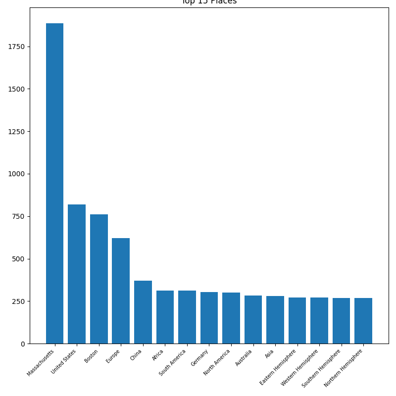
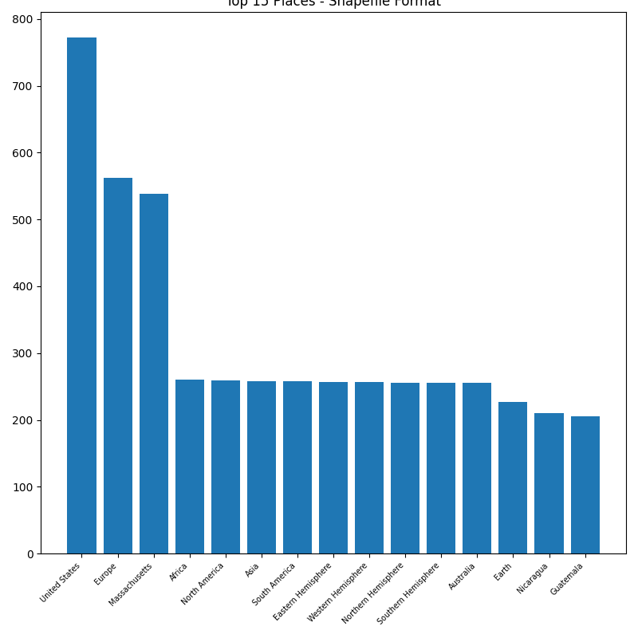
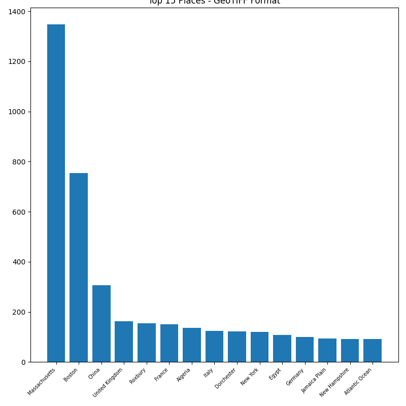
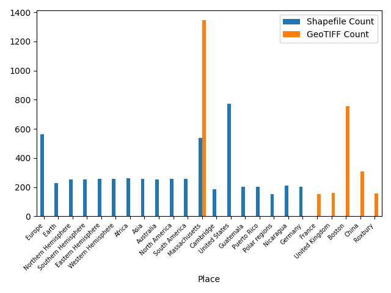
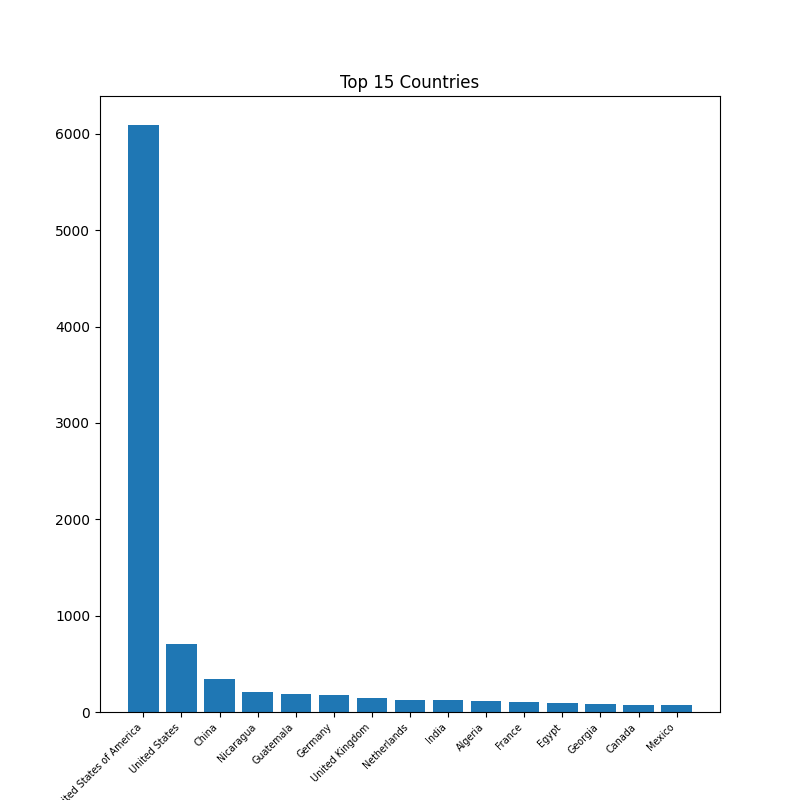
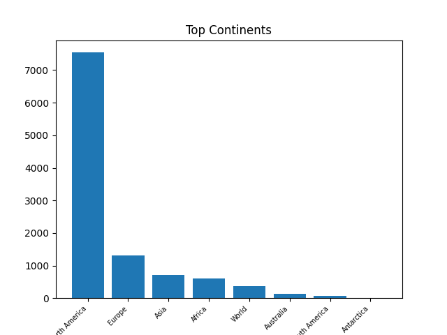

<br>
### Places and "spatial"
##### Motivation
One of the most immediate features of a geospatial dataset is the region it covers. That's why early on in this project, a burning question for me was “what region(s) -- cities, states, countries, continents -- does the Harvard Geospatial Library (HGL) have data to describe?”
##### Diving into the Metadata
To acquire insights into the library's vast collection of geospatial datasets, totaling over 11,000 to date, I worked with metadata records documented on the [HGL GitHub account](https://github.com/harvard-library/harvard-geodata/). One of my favorite and earliest conversations with a librarian was with HGL's very own [Marc McGee](https://library.harvard.edu/staff/marc-mcgee), the Geospatial Metadata Librarian, who specializes in the production of FGDC (Federal Geographic Data Committee)-compliant metadata records. He noted that there are two main formats of metadata records that the library keeps -- the robust FGDC format and more accessible JSON GeoBlacklight format, which is derived from the former.
After exploring both formats of metadata, I elected to delve into the JSON GeoBlacklight metadata. Find the .py script to download all metadata fields for the 11,000 datasets as 1 .csv [here](https://github.com/HarvardMapCollection/vn-may-crane-23-docs/blob/main/all-jsons.py). The relevant data field was “dct_spatial_sm”, which describes the spatial/geographical coverage given by a given geospatial dataset. For simplicity, I refer to this field as “spatial”, and "spatial" has no controlled vocabulary, which makes its values variable and unstandardized.
##### Exploratory Visualizations
Using the metadata as is, I plotted the top 15 places covered in the Harvard collection:

We see the same Massachusetts, United States, and Boston prevalence in this alternate view, a wordcloud:
<img src="worldcloud.png" alt="Places Wordcloud" width="600"/>
Interestingly, China, Germany, and Australia, in that order, stand out as the dominating countries, while Europe, Africa, South America, and North America, in that order, are the prevailing continents. We can rather easily reason about the prevalence of United States, Massachusetts, and Boston, given the location of the Harvard Geospatial Library, but why not Asia? Why Germany? Questions like this can be expertly answered by HGL's [Bonnie Burns](https://library.harvard.edu/staff/bonnie-burns), the Head of Geospatial Resources and a key decisionmaker in the collection's development.
##### Splitting on format
Marc and Bonnie suggested looking at the data split on the field of "dc_format_s", which describes the file format of the data. The two main formats are Shapefile's and GeoTIFF's. Shapefile-formatted data features points, lines, and/or polygon features, whereas GeoTIFF-formatted data stores and displays raster images (such as scanned photography and maps). To read more on the distinction, check out [Belle Lipton's](https://library.harvard.edu/staff/belle-lipton) thorough [format breakdown](link.com).
Looking at Shapefile's first:

We see that the HGL keeps the most Shapefile records of the U.S., Europe, Massachusetts, Africa, and North America.
In contrast, looking at GeoTIFF's:

We see that the HGL keeps comparatively more GeoTIFF records of Massachusetts, Boston, China, the U.K., and European places.
Placing both format-place breakdowns onto the same plot, we can compare their top 15's head-to-head:

Shapefile's tend to describe larger regions than GeoTIFF's -- like Earth, hemispheres, and even the Polar regions.
##### Spatial Levels
After an initial passthrough with the original metadata, I wanted to dive deeper into the "spatial" field. The original metadata is messy and a bit inconsistent in format: as shown in the exploratory data visualizations, the metadata records count "Boston", "Massachusetts", and "United States" separately so that out of three datasets with those "spatial" descriptions, only one would contribute to the "United States" count. While a Boston-oriented dataset doesn't describe the whole United States, it can still be counted as an American dataset when we ask interesting questions like "which countries do we have the most data for?" Thus, I tried to standardize the completeness of our spatial descriptions by using [Google's geocoding API](https://developers.google.com/maps/documentation/geocoding/overview) to flesh out the "spatial" field so that every dataset would have information about the town/city, state, country, and continent if available.
The complete documentation for this feature engineering can be found [here](https://github.com/HarvardMapCollection/vn-may-crane-23-docs/blob/main/spatial_levels.py).
After completing this breakdown of spatial levels, my updated top 15 bar plots look like so:
*State*
<img src="states.png" alt="states" width="800"/>
Again, Massachusetts prevails. D.C. and N.Y. follow, the political, economic, and social capitals of the U.S. Intersetingly, N.H. and M.E. are next.
*Country*

The U.S. and China are intuitive to me. *little more writing*
*Continent*

North America and Europe stand out here. Of course, we have the least data on Antarctica.
##### User interest vs. data availability